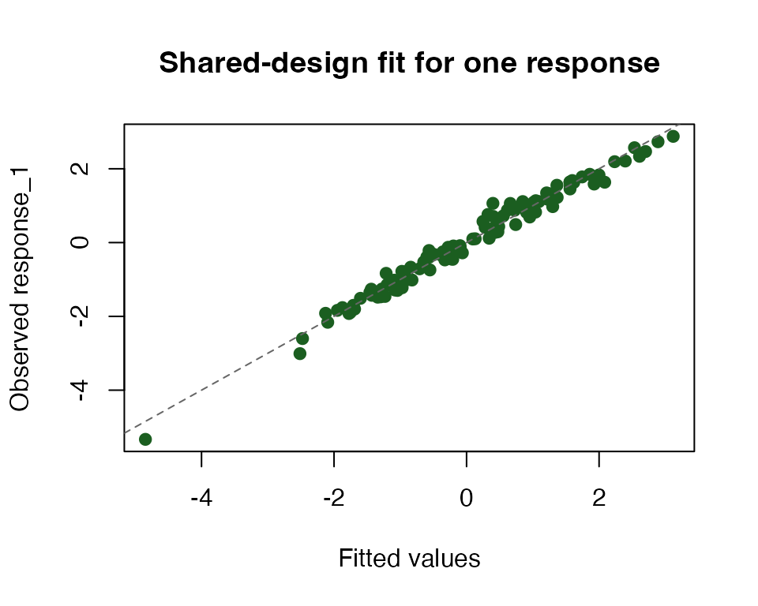

amatrix is for matrix-heavy code that already fits the
Matrix idiom but needs a cleaner path to accelerated
execution. You keep ordinary matrix inputs, wrap them once, and then use
Matrix-compatible objects that carry backend preferences into linear
algebra and model fitting.
This vignette uses one common workload: one design matrix, many
response columns. By the end, you will have a backend-aware design
matrix, a shared-design QR fit from many_lm(), and a
compact way to inspect where amatrix plans to run each
operation.
What do your inputs look like?
c(
observations = nrow(X),
predictors = ncol(X),
responses = ncol(Y)
)
#> observations predictors responses
#> 120 6 8The design matrix X is an ordinary dense R matrix with
one row per observation and one column per predictor. The response
matrix Y has the same number of rows, but each column is a
separate regression target that shares the same design.
What is the quickest end-to-end path?
X_am <- adgeMatrix(X)
fit <- many_lm(X_am, Y, method = "qr", include_fitted = TRUE, include_residuals = TRUE)
dim(coef(fit))
#> [1] 6 8adgeMatrix() is the main dense-matrix constructor.
many_lm() then fits all response columns against the same
design in one call and returns a coefficient matrix with one column per
response.
How does amatrix decide where to run?
amatrix_backend_status()[, c("name", "available", "precision_modes", "residency_capable")]
#> name available precision_modes residency_capable
#> 1 arrayfire FALSE <NA> FALSE
#> 2 cpu TRUE strict,fast FALSE
#> 3 metal FALSE <NA> FALSE
#> 4 mlx FALSE <NA> FALSE
#> 5 opencl FALSE <NA> FALSEThe status table tells you which backends are registered on the current machine and whether they are usable right now. A backend can be registered but unavailable, in which case the same code still has a predictable CPU fallback.
plan <- amatrix_backend_plan(X_am, "qr")
plan[c("chosen", "chosen_path", "requested_precision")]
#> $chosen
#> [1] "cpu"
#>
#> $chosen_path
#> [1] "cold"
#>
#> $requested_precision
#> [1] "strict"This plan is the compact view of a dispatch decision. You can see which backend was chosen, whether the operation will run as a cold or resident path, and which precision contract the object is requesting.
When does shared-design caching help?
The main reason to use amatrix for repeated regression
is that the design-matrix factorization can be reused across calls when
X stays the same. That matters when you fit many batches of
responses against one shared design.
X_cache_am <- adgeMatrix(X)
fit_a <- many_lm(X_cache_am, Y[, 1:4, drop = FALSE], method = "qr", cache = TRUE)
fit_b <- many_lm(X_cache_am, Y[, 5:8, drop = FALSE], method = "qr", cache = TRUE)
c(first_call = fit_a$cache_reused, second_call = fit_b$cache_reused)
#> first_call second_call
#> FALSE TRUEWith a fresh backend-aware copy of X, the first call
computes and stores the QR factorization for that design. The second
call reuses it because the design matrix is unchanged.
What should you inspect after a fit?
summary_tbl <- data.frame(
response = colnames(Y),
rss = round(fit$rss, 3),
sigma2 = round(fit$sigma2, 4),
r2 = round(r2, 3)
)
knitr::kable(summary_tbl, align = "lrrr")| response | rss | sigma2 | r2 | |
|---|---|---|---|---|
| response_1 | response_1 | 4.402 | 0.0386 | 0.980 |
| response_2 | response_2 | 6.406 | 0.0562 | 0.964 |
| response_3 | response_3 | 3.696 | 0.0324 | 0.961 |
| response_4 | response_4 | 4.614 | 0.0405 | 0.992 |
| response_5 | response_5 | 4.157 | 0.0365 | 0.990 |
| response_6 | response_6 | 3.890 | 0.0341 | 0.994 |
| response_7 | response_7 | 4.913 | 0.0431 | 0.956 |
| response_8 | response_8 | 4.789 | 0.0420 | 0.949 |
rss and sigma2 tell you how much
unexplained variation remains in each response. Here the fitted models
recover most of the signal because the responses were generated from a
shared linear design with modest noise.

The points fall close to the identity line, which matches the high
r2 values from the hidden checks and the small residual
variances in the summary table.
How do you ask for a fast backend?
The CPU path above is the safest default because it runs everywhere. On a machine with an available accelerator backend, the code shape stays the same and you only change the constructor metadata:
X_fast <- adgeMatrix(X, mode = "fast")
fit_fast <- many_lm(X_fast, Y, method = "qr", cache = TRUE)
coef(fit_fast)If you are writing library code, the default path is still to wrap once at the boundary and keep the rest of the code generic:
X_am <- as_adgeMatrix(X, mode = "fast")
fit <- many_lm(X_am, Y, method = "qr", cache = TRUE)That per-object path does not require session-global setters or a
hardcoded backend name. amatrix will prefer an available
fast-capable accelerator automatically and fall back to CPU when none is
available.
If a caller wants to flip defaults for one local block instead of one
object, use with_amatrix():
with_amatrix(policy = "auto", precision = "fast", {
X_am <- as_adgeMatrix(X)
fit <- many_lm(X_am, Y, method = "qr", cache = TRUE)
})Use amatrix_bind_resident() only when you need to
optimize a particularly hot repeated path.
Where next?
The next functions to explore are adgeMatrix(),
many_lm(), amatrix_backend_status(), and
amatrix_explain(). If you want to audit a single operation
more deeply, start with amatrix_backend_plan() and then
compare that compact plan to the printed explanation from
amatrix_explain().